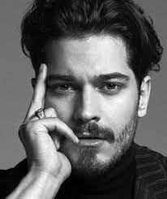
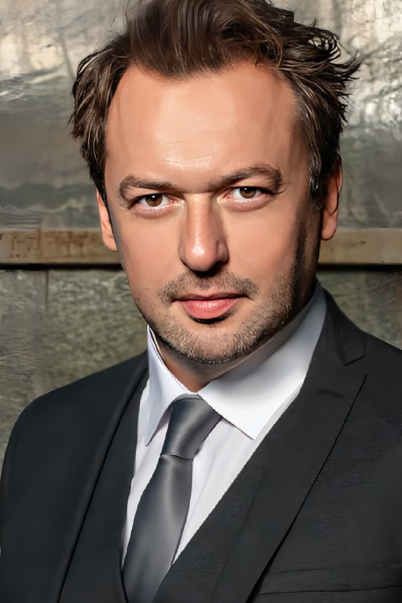
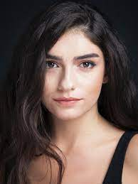
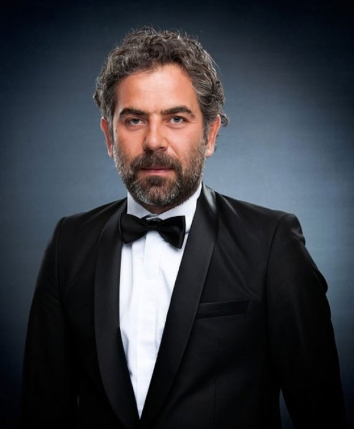
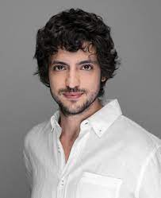
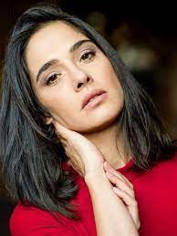

The Protector (Turkish: Hakan: Muhafız) is a Turkish drama fantasy series starring Çağatay Ulusoy. It was created by Binnur Karaevli and directed by Umut Aral, Gönenç Uyanık, and Can Evrenol in the first season. The story is inspired from Turkish novelist Nilüfer İpek Gökdel's mystery novel, 'Karakalem ve Bir Delikanlının Tuhaf Hikayesi' (A Strange Story of Charcoal and a Young Man), which was published in 2016. The first season consists of 10 episodes and became available for streaming on Netflix on December 14, 2018. The second season consists of 8 episodes and was made available for live streaming on April 26, 2019. On June 10, 2019 the series was renewed for seasons 3 and 4. The fourth and last season was released on July 9, 2020.
Plot
After his adoptive father Neşet is killed, Hakan Demir, an Istanbul shopkeeper, discovers that he is connected to an ancient secret order whose duty is to protect the city. Hakan must embrace his family's legacy as The Protector, a hero with the duty to kill the Immortal and prevent the destruction of the city.
He is helped by Kemal and his daughter Zeynep, members of the secret order of the Loyal Ones, who are dedicated to assisting the Protector.
Main

Çağatay Ulusoy as the Last Protector, Hakan Demir / First Protector Harun Muhafız, a man in his twenties who works for his adoptive father Neşet in their small antique shop but dreams of opening a bigger store and becoming successful. After Neşet is killed by people looking for a mysterious Ottoman shirt, Zeynep and Kemal tell him to put the shirt on. As the shirt fuses with his body, he becomes The Protector, the series' protagonist. (Season 1-4).
Ayça Ayşin Turan as Leyla Sancak, Erdem's assistant [1] and Hakan's love interest.[8] (Season 1-2).
Okan Yalabık as Faysal Erdem / Hüsrev Hodja, the series' antagonist, a successful businessman whose career has inspired Hakan to try to better himself.[1] He is a second Immortal. (Season 1-4).

Hazar Ergüçlü as Zeynep Erman, one of the Loyal Ones. She is not much impressed with Hakan at first as she trains him in combat techniques.[8] (Season 1- 4) and Hakan's love interest. (season 3-4)

Yurdaer Okur as Kemal Erman, Zeynep's pharmacist father,[1] also a Loyal One.[8] (Season 1).

Burçin Terzioğlu as Rüya Erdem / Sultan Cavidan, Faysal's wife. (Guest: Seasons 1 and 4, Main: Season 2-3).
Engin Öztürk as Levent Demir, Hakan's brother. (Season 2-3).
Taner Ölmez as Burak, one of the Loyal Ones (Season 3-4).

Funda Eryiğit as Nisan Türk /Mrs Valeria, a chemist, first Immortal and grand vizier. (Season 3-4).

 The Protector (Turkish: Hakan: Muhafız) is a Turkish drama fantasy series starring Çağatay Ulusoy. It was created by Binnur Karaevli and directed by Umut Aral, Gönenç Uyanık, and Can Evrenol in the first season. The story is inspired from Turkish novelist Nilüfer İpek Gökdel's mystery novel, 'Karakalem ve Bir Delikanlının Tuhaf Hikayesi' (A Strange Story of Charcoal and a Young Man), which was published in 2016. The first season consists of 10 episodes and became available for streaming on Netflix on December 14, 2018. The second season consists of 8 episodes and was made available for live streaming on April 26, 2019. On June 10, 2019 the series was renewed for seasons 3 and 4. The fourth and last season was released on July 9, 2020.
The Protector (Turkish: Hakan: Muhafız) is a Turkish drama fantasy series starring Çağatay Ulusoy. It was created by Binnur Karaevli and directed by Umut Aral, Gönenç Uyanık, and Can Evrenol in the first season. The story is inspired from Turkish novelist Nilüfer İpek Gökdel's mystery novel, 'Karakalem ve Bir Delikanlının Tuhaf Hikayesi' (A Strange Story of Charcoal and a Young Man), which was published in 2016. The first season consists of 10 episodes and became available for streaming on Netflix on December 14, 2018. The second season consists of 8 episodes and was made available for live streaming on April 26, 2019. On June 10, 2019 the series was renewed for seasons 3 and 4. The fourth and last season was released on July 9, 2020.